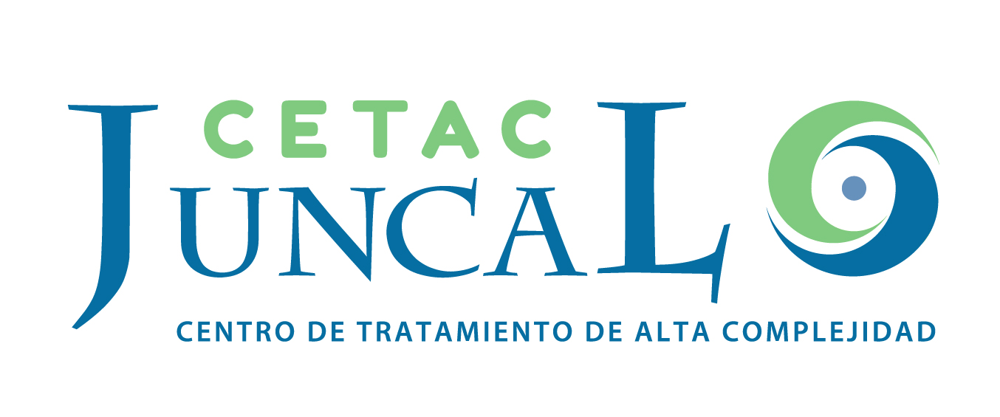
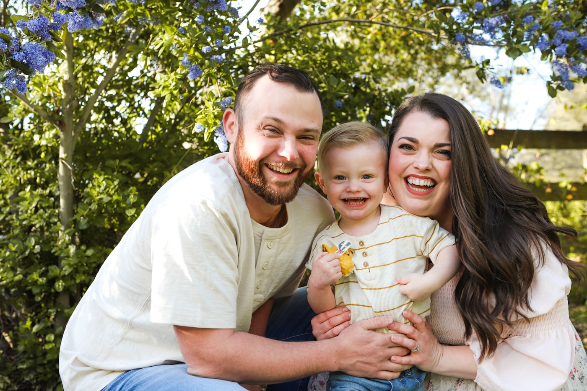
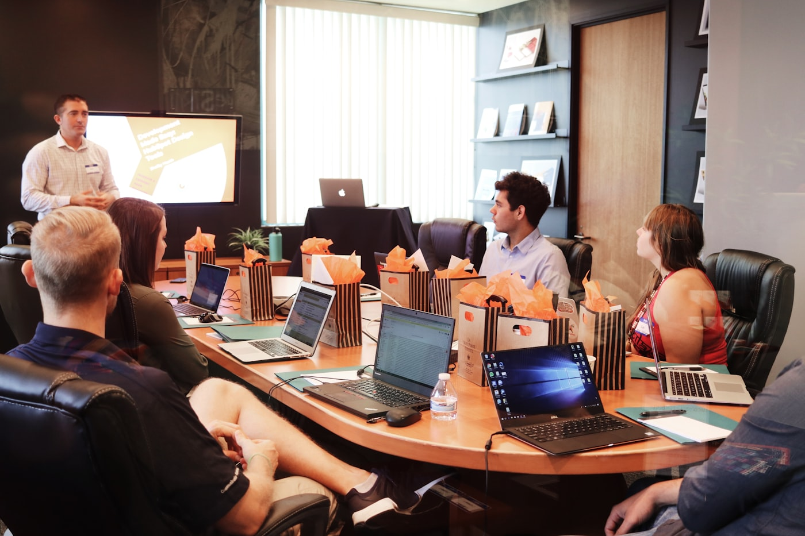

Propuesta estratégica · Access One Argentina
Antes de invertir fuerte, hay que entender qué funciona. Una hoja de ruta para construir, medir y optimizar el modelo de adquisición digital de Access One en Argentina —y recién después, acelerar.
Popcorn es una agencia de marketing, comunicación y creatividad que trabaja desde una mirada de negocio. Para Access One no proponemos administrar anuncios: proponemos diseñar, validar y escalar el sistema completo de adquisición digital —desde la propuesta de valor hasta la venta.
Empezamos por el objetivo comercial —cápitas, CAC, ROI— y desde ahí definimos las acciones. Nunca al revés.
Años trabajando con instituciones médicas. Entendemos pacientes, derivantes, productos intangibles y decisiones de alta consideración.
Performance, datos y optimización continua. Medimos lo que importa y ajustamos hasta que el modelo sea rentable.
Trabajamos con hospitales, centros médicos, laboratorios y empresas de medicina del país. Sabemos cómo se comunica un servicio que no se ve, que se decide con miedo y confianza, y que vale por el respaldo que hay detrás.
Procesos de decisión largos, racionales y emocionales a la vez.
Comunicar valor sin un producto físico que mostrar.
Embudos de consideración, no de impulso.
Integramos la generación de demanda con el cierre comercial.
Algunas de las organizaciones de salud con las que trabajamos.
 Hospital Universitario AustralSalud · Alta complejidad
Hospital Universitario AustralSalud · Alta complejidad FLENINeurología
FLENINeurología Instituto Alexander FlemingOncología
Instituto Alexander FlemingOncología Swiss MedicalMedicina prepaga
Swiss MedicalMedicina prepaga
CETAC JuncalDiagnóstico & tratamiento ManLabLaboratorio
ManLabLaboratorio CentraLabLaboratorio
CentraLabLaboratorio CMI Fitz RoyMedicina laboral
CMI Fitz RoyMedicina laboral
Access One ofrece acceso a la mejor medicina del mundo como complemento de las coberturas premium locales. El producto es sólido. El desafío no es el producto: es construir, desde cero, el canal que lo lleve al mercado argentino.
No hay campañas previas en Argentina sobre las cuales optimizar.
Aún no sabemos qué mensaje, audiencia y canal rinden mejor.
Se vende respaldo y tranquilidad: alta consideración, ciclo largo.
El objetivo de los primeros meses es entender antes de invertir fuerte.
Contexto · InnovAr LATAM lidera el desarrollo comercial del mercado argentino. Popcorn aporta estrategia, performance y optimización.
Lanzar fuerte sobre un mercado sin validar quema presupuesto. Por eso proponemos un camino en tres tiempos: primero descubrimos qué funciona, luego lo afinamos, y solo entonces escalamos con confianza sobre lo que ya demostró ser rentable.
Probar propuestas de valor, mensajes, audiencias y canales con un presupuesto controlado. Encontrar las combinaciones que generan leads de calidad.
Mejorar el embudo punta a punta: CRO, segmentación, creatividades y nurturing. Bajar el CPL y el CAC sin perder calidad de lead.
Aumentar la inversión solo sobre los segmentos y canales que ya probaron rentabilidad. Crecer sobre certezas, no sobre supuestos.

Cada peso invertido en los primeros 60-90 días compra aprendizaje: datos que vuelven previsible al canal. Cuando escalamos, ya no apostamos: amplificamos lo que sabemos que convierte. Así se construye un modelo de adquisición rentable y sostenible.
Crece la demanda de soluciones de salud premium y la preocupación por el acceso a tratamientos de alta complejidad. Cada vez más familias y ejecutivos buscan complementar su cobertura con un respaldo internacional. No hablamos desde el miedo: hablamos desde la prevención, la tranquilidad y la libertad de elegir.

Más interés por coberturas que aseguren acceso, no solo descuentos.
Preocupación creciente por tratamientos que no siempre están disponibles localmente.
Se posiciona junto a OSDE, Swiss Medical, Omint o Medifé, no contra ellas.
El driver es la previsión y la paz mental para la familia, no la urgencia.

Access One abre la puerta a la mejor medicina del mundo. Ese es el activo que vamos a comunicar.
Un partner estratégico no esconde los riesgos: los anticipa. Estos son los principales desafíos y nuestro plan para mitigarlos desde el día uno.
Mitigación: fase de validación con presupuesto controlado y un framework de testing estructurado, para generar aprendizaje rápido y barato antes de comprometer inversión.
Mitigación: embudo multi-etapa con contenidos de nurturing y la segunda opinión médica como puerta de entrada de bajo compromiso.
Mitigación: definición de lead scoring junto al equipo comercial y optimización al CAC y a la venta, no solo al CPL.
Mitigación: setup de medición y tracking desde el inicio, con eventos de conversión claros y trazabilidad de punta a punta.
Mitigación: testing de propuestas de valor y mensajes pensados para el mercado argentino, no traducciones de otros mercados.
Mitigación: integración con ventas, feedback loop continuo y acuerdos de tiempos de seguimiento de cada lead generado.
Cada etapa tiene un objetivo claro y alimenta a la siguiente. Del descubrimiento inicial hasta el escalamiento basado en datos.
Investigación, audiencias, mensajes, propuesta de valor y funnel
Meta, Google y LinkedIn Ads · landing · tracking
Testing, CRO, ajuste de audiencias y mensajes
Segmentos rentables · más inversión · más canales
Investigación inicial, definición de públicos, mensajes y propuesta de valor. Diseño del embudo comercial.
Puesta en marcha de campañas en Meta, Google y LinkedIn. Arquitectura de landing y configuración del tracking.
Testing continuo de audiencias, mensajes y creatividades. CRO sobre la landing para mejorar la conversión.
Identificación de los segmentos más rentables, incremento gradual de inversión y expansión de canales.
Esperamos un período de aprendizaje de 60 a 90 días antes de alcanzar indicadores estables. Este es el plan para llegar ahí con orden.
Investigación de mercado y audiencias, definición de propuesta de valor y mensajes, diseño del embudo, arquitectura y copy de la landing, e instalación completa del tracking y la medición.
Activación de campañas en Meta, Google y LinkedIn con múltiples variantes de audiencias, mensajes y creatividades. Comienza la recolección de datos reales.
Identificación de las combinaciones que mejor rinden, primeras acciones de CRO sobre la landing y depuración de audiencias. El CPL empieza a estabilizarse.
El modelo muestra patrones claros: qué segmentos convierten, a qué costo y con qué calidad de lead. Definimos la base sobre la cual es seguro escalar.
Incremento progresivo de inversión sobre los segmentos rentables y expansión de canales, con el objetivo de construir un flujo sostenido de nuevas cápitas a lo largo del primer año.
Roles claros: Popcorn aporta estrategia, performance y optimización. El equipo interno de Access One aporta diseño, producción y desarrollo. Sin superposiciones.
Estrategia · Performance · Optimización
Equipo interno ya disponible
Popcorn entrega los lineamientos estratégicos (briefs, estructura y copy) para que el equipo interno ejecute la producción con foco en conversión.
No medimos vanidad. Medimos el negocio: cuánto cuesta conseguir un cliente, qué calidad tiene y cuánto retorna la inversión.
Cuánto cuesta generar cada contacto interesado. El primer termómetro de eficiencia.
Cuánto cuesta convertir un lead en una cápita real. El indicador que guía el escalamiento.
Qué porcentaje de leads califica y avanza. Optimizamos a calidad, no solo a volumen.
De clic a lead, y de lead a venta. La salud del embudo en cada etapa.
El resultado de negocio: nuevas cápitas atribuibles al canal digital.
La relación entre lo invertido y lo generado. El número que valida el modelo.
Un tablero vivo, no un PDF que llega tarde. Acceso permanente al estado del canal, con lectura de negocio y no solo de métricas de plataforma.

No un ejecutor de tareas: un equipo de dirección que piensa el negocio de Access One como propio, con roles definidos y responsabilidad de extremo a extremo.
Visión de negocio, definición de objetivos, prioridades y dueño del proyecto de extremo a extremo.
Estrategia y gestión de campañas en Meta, Google y LinkedIn, con optimización continua.
Medición, tracking, dashboards y lectura de resultados para decidir con evidencia.
Arquitectura de landing, copy estratégico y CRO junto al equipo técnico de Access One.
No es un gasto en pauta: es la construcción de un activo de negocio —un canal de adquisición propio, medible y escalable.
Modelo por etapas. Arrancamos con un presupuesto de validación controlado y escalamos la inversión solo sobre lo que demuestra rentabilidad.
Inversión que rinde doble. En los primeros meses cada peso compra ventas y, sobre todo, aprendizaje que vuelve previsible al canal.
Transparencia total. La inversión en medios es gestionada y reportada por separado del fee de Popcorn.
Foco en el retorno. El objetivo no es gastar más, sino construir un CAC sano que permita escalar con confianza.
Es un producto premium de venta consultiva, más cerca de un servicio financiero/salud. El usuario no compra en el primer clic: primero hay que educarlo, generar confianza y recién después convertirlo. Por eso tomamos benchmarks de B2B y venta consultiva —no de seguros de viaje ni de medicina prepaga—.
Educar → generar confianza → convertir. El ciclo de decisión es más largo y deliberado que el de un producto de impulso.
Los CPL iniciales son más altos y bajan a medida que el algoritmo aprende y se optimiza el mensaje. La conversión crece con la madurez de la cuenta.
Google captura demanda existente con un CPL más bajo. LinkedIn y las campañas de awareness cuestan más, pero cumplen el rol de generar demanda nueva.
En la etapa de validación preferimos quedarnos cortos. Siempre habrá tiempo de superar las metas una vez que el modelo demuestre rentabilidad.
Tres puntos de partida posibles para la pauta mensual —que define y abona Access One directamente—. A mayor inversión, más volumen de leads y mejor eficiencia a medida que se diversifican y optimizan los canales.
Elegí una opción · al seleccionar un escenario, queda incluido en el correo de “Quiero avanzar”
Google + Meta · sin LinkedIn
Google + Meta + LinkedIn
Todos los canales activos
| Plataforma | Objetivo | Inversión | Clics | CPC medio | Leads | CPL | Conv. |
|---|---|---|---|---|---|---|---|
| Google Search | Captación de demanda (alta intención) | $900.000 | 520 | $1.731 | 16 | $57.692 | 3,00% |
| Google Demand Gen | Generación de conocimiento y consideración | $360.000 | 310 | $1.161 | 6 | $58.065 | 2,00% |
| Meta Ads | Remarketing y recuperación de usuarios interesados | $240.000 | 230 | $1.043 | 6 | $41.739 | 2,50% |
| Total / Prom. | $1.500.000 | 1.060 | $1.415 | 28 | $54.446 | 2,60% |
| Plataforma | Objetivo | Inversión | Clics | CPC medio | Leads | CPL | Conv. |
|---|---|---|---|---|---|---|---|
| Google Search | Captación de demanda (alta intención) | $1.200.000 | 760 | $1.579 | 30 | $39.474 | 4,00% |
| Google Demand Gen | Generación de conocimiento y consideración | $700.000 | 560 | $1.250 | 11 | $62.500 | 2,00% |
| Meta Ads | Remarketing y recuperación de usuarios interesados | $350.000 | 420 | $833 | 13 | $27.778 | 3,00% |
| LinkedIn Ads | Posicionamiento y tráfico calificado de perfiles ejecutivos | $250.000 | 120 | $2.083 | 2 | $138.889 | 1,50% |
| Total / Prom. | $2.500.000 | 1.860 | $1.344 | 56 | $44.643 | 3,01% |
| Plataforma | Objetivo | Inversión | Clics | CPC medio | Leads | CPL | Conv. |
|---|---|---|---|---|---|---|---|
| Google Search | Captación de demanda (alta intención) | $1.700.000 | 1.180 | $1.441 | 53 | $32.075 | 4,00% |
| Google Demand Gen | Generación de conocimiento y consideración | $1.100.000 | 900 | $1.222 | 20 | $55.000 | 4,50% |
| Meta Ads | Remarketing y recuperación de usuarios interesados | $600.000 | 720 | $833 | 22 | $27.273 | 3,00% |
| LinkedIn Ads | Posicionamiento y tráfico calificado de perfiles ejecutivos | $600.000 | 250 | $2.400 | 5 | $120.000 | 2,00% |
| Total / Prom. | $4.000.000 | 3.050 | $1.311 | 100 | $40.000 | 3,28% |
Cifras estimativas · proyección conservadora para la etapa de validación · se ajustan con datos reales de campaña
Validar antes de escalar. Aprender qué funciona, optimizarlo y crecer sobre certezas. Estamos listos para empezar.